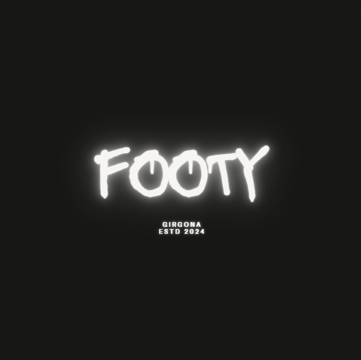
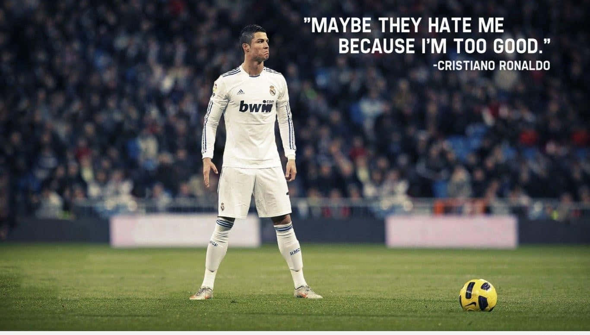
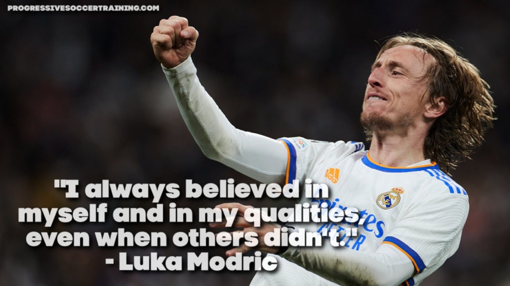
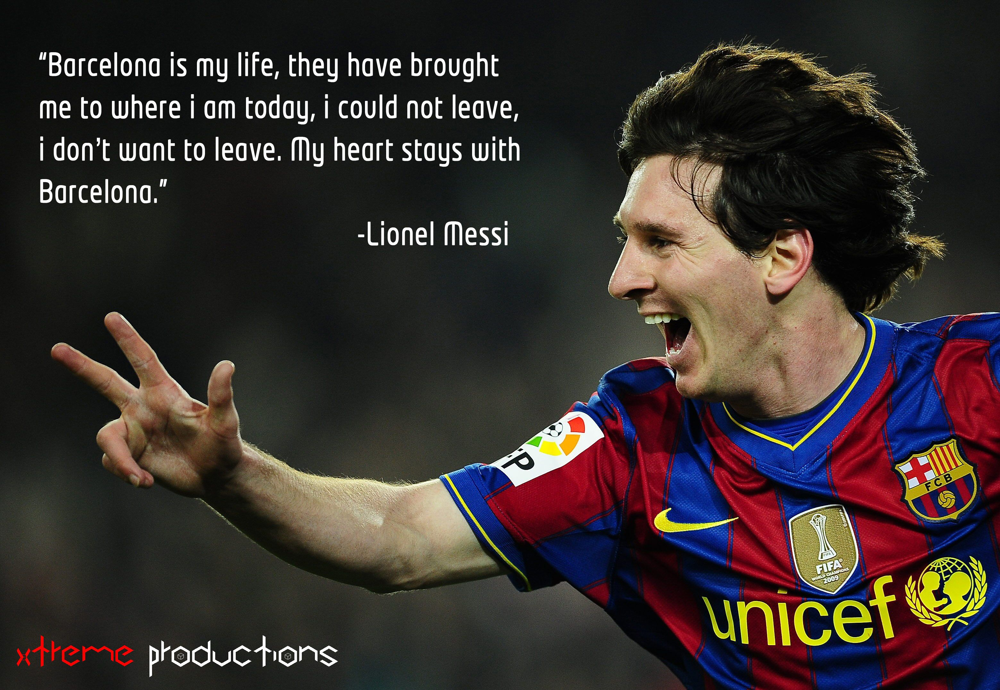

<!-- 2. შექმენით დიდი საინფორმაციო საიტი სადაც გამოიყენებთ მთელ განვლილ მასალას. -->

<h1>Get.Better.At.Footy</h1>

<nav>
    <a href="Drills.html">Drills</a>‎ ‎ ‎ ‎ ‎ ‎ ‎ ‎
    <a href="Products.html">Products</a>‎ ‎ ‎ ‎ ‎ ‎ ‎ ‎
    <a href="AboutUs.html">About Us</a>‎ ‎ ‎ ‎ ‎ ‎ ‎ ‎
    <a href="contact.html">Contact</a>‎ ‎ ‎ ‎ ‎ ‎ ‎ ‎
    <a href="Inspiration.html">Inspiration</a>‎ ‎ ‎ ‎ ‎ ‎ ‎ ‎
</nav>

<h3>Become a more calm and composed player</h3>


<h3>Become Better Version Of Yourself</h3>


<h3>Be Loyal</h3>

